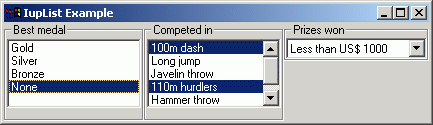
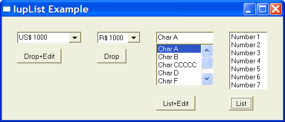

Creates a list interface element, which is a list of two-state (on or off) items. An action is generated when an event changes the state of an item.
Ihandle* IupList(char *action); [in C] iup.list{} -> (elem: ihandle) [in Lua] list(action) [in LED]action: String with the name of the action generated when the state of an item is changed.
This function returns the identifier of the created list, or NULL (nil in IupLua) if an error occurs.
"1": First item in the list.
"2": Second item in the list.
"3": Third item in the list.
...
"n": nth item in the list.The values can be any text. Default: NULL. The first element with a NULL is considered the end of the list.
DROPDOWN: Changes the appearance of the list for the user: only the selected item is shown beside a button with the image of an arrow pointing down. Creation-only attribute. Can be "YES" or "NO". Default "NO".
EDITBOX: Adds an edit box to the list. Creation-only attribute. Can be "YES" or "NO". Default "NO".
VISIBLE_ITEMS: Number of items that appear when a DROPDOWN list is activated. Default: Depends on the native system.
MULTIPLE: Allows selecting several items simultaneously (multiple list). Default: "NO". Creation only attribute in Windows. Valid only for simple lists with no edit box.
SIZE: Size of the list. Default: room for 5 characters in 1 item.
VALUE: Depends on the list type:
Simple list with edit box: Text entered by the user.
Simple list: Integer number representing the selected element in the list (begins at 1). It can be zero if there is no selected item.
Multiple list: Sequence of '+' and '-' symbols indicating the state of each item. When setting this value, the user must provide the same amount of '+' and '-' symbols as the amount of items in the list, otherwise the specified items will be deselected.APPEND: Inserts a text at the end of the current text. Valid only when EDITBOX=YES.
INSERT: Inserts a text in the caret's position. Valid only when EDITBOX=YES.
NC: Maximum number of characters allowed. Valid only when EDITBOX=YES.
CARET: Position of the insertion point. Valid only when EDITBOX=YES.
READONLY: Allows the user only to read the contents, without changing it. Possible values: YES, NO (default). Valid only when EDITBOX=YES.
SELECTION: Selection interval. Valid only when EDITBOX=YES.
SELECTEDTEXT: Selection text. Valid only when EDITBOX=YES.
SHOWDROPDOWN: Action to open or close the dropdown list. Can be "YES" or "NO". Valid only when DROPDOWN=YES.
ACTION: Action generated when the state of an item in the list is changed. Also provides information on the changed item:
int function (Ihandle *self, char *t, int i, int v); [in C]
elem:action(t: string, i, v: number) -> (ret: number) [in Lua]
t: Text of the changed item.
i: Number of the changed item.
v: Equal to 1 if the option was selected or to 0 if the option was deselected.MULTISELECT_CB: Action generated when the state of an item in the multiple selection list is changed. But it is called only when the interaction is over.
int function (Ihandle *self, char *value); [in C]
elem:multiselect_cb(value: string) -> (ret: number) [in Lua]
value: Similar to the VALUE attribute for a multiple selection list, but non changed items are marked with an 'x'.This callback is called only when MULTIPLE==YES. And if this callback is defined the ACTION callback will not be called.
EDIT_CB: Action generated when the text in the text box is manually changed by the user. Valid only when EDITBOX=YES.
int function(Ihandle *self, int c, char *after); [in C] elem:edit_cb(c: number, after: string) -> (ret: number) [in Lua]text: Represents the new text value. This is the same callback definition as for the IupText.
CARET_CB: Action generated when the caret/cursor position is changed. Valid only when EDITBOX=YES.
int function(Ihandle *self, int row, int col); [in C] elem:caret_cb(row, col: number) -> (ret: number) [in Lua]row, col: Row and collumn number.
Text is always left aligned.

